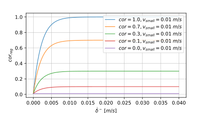
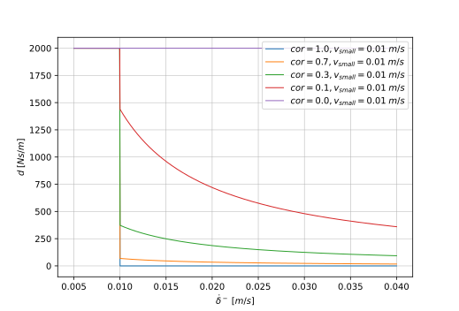
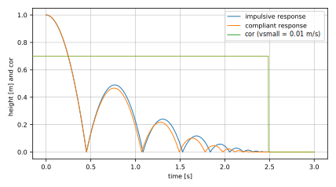

Collision Handling
Modia3D supports collisions of objects that are defined with a contact material and (a) have a convex geometry, or (b) can be approximated by a set of convex geometries, or (c) have a concave geometry that is (automatically) approximated by its convex hull. When contact occurs, the response is computed with elastic force/torque laws based on the penetration depth and the relative motion of the objects in contact. It is planned to optionally also support impulsive response calculation in the future.
The current approach has several limitations that a user must know, in order that a simulation is successful:
- The current collision handling is designed for variable step-size integrators for systems that have realistic physical material behaviour.
- Usually, a relative tolerance of $10^{-8}$ or smaller has to be used since otherwise a variable step-size integrator will typically fail. The reason is that the penetration depth is computed from the difference of tolerance-controlled variables and the precision will be not sufficient if a higher tolerance will be used because the penetration depth is in the order of $10^{-5} .. 10^{-6}~ m$. A relative tolerancie of $10^{-5}$ might be used, if the heuristic elastic contact reduction factor $k_{red} = 10^{4}$ (see below).
- A reasonable reliable simulation requires that objects have only point contact, since otherwise the contact point can easily $jump$ between model evaluations and a variable step-size integrator will not be able to cope with this, so will terminate with an error. For this reason, all geometrical objects are slightly modified in various ways for the collision handling. Most important, all geometries are smoothed with a small sphere (e.g. with radius = 1mm) that is moved over all surfaces.
Material constants
The response calculation uses the following material constants from the Solid material palette and from the Contact pair material palette.
Ein [N/m^2]: Young's modulus of contact material ($\gt 0$).nu: Poisson's ratio of contact material ($0 \lt nu \lt 1$).cor: Coefficient of restitution between two objects ($0 \le cor \le 1$).mu_k: Kinetic/sliding friction force coefficient between two objects ($\ge 0$).mu_r: Rotational rolling resistance torque coefficient between two objects ($\ge 0$).
Additionally, the response calculation is changed at small relative velocities and relative angular velocities. This region is defined by the following constants:
vsmallin [m/s]: Used for regularization when computing the unit vector in direction of the relative tangential velocity (see below).wsmallin [rad/s]: Used for regularization when computing the unit vector in direction of the relative angular velocity (see below).
Finally, the heuristic factor $k_{red}$ (default = 1.0) can be defined with keyword argument elasticContactReductionFactor in the SceneOptions constructor. The goals is the following: Applying the elastic response calculation on hard materials such as steel, typically results in penetration depths in the order of $10^{-5} .. 10^{-5} m$. A penetration depth is implicitly computed by the difference of the absolute positions of the objects in contact and these absolute positions are typically error-controlled variables of the integrator. This in turn means that typically at least a relative tolerance of $10^{-8}$ needs to be used for the integration, in order that the penetration depth is computed with 2 or 3 significant digits. To improve simulation speed, factor $k_{red}$ reduces the stiffness of the contact and therefore enlarges the penetration depth. If $k_{red}$ is for example set to $10^{4}$, the penetration depth might be in the order of $10^{-3} m$ and then a relative tolerance of $10^{-5}$ might be sufficient. In many cases, the essential response characteristic is not changed (just the penetration depth is larger), but simulation speed is significantly improved.
Response calculation
When two 3D objects penetrate each other with a penetration depth $\delta > 0$ then a contact force and a contact torque is computed from the elastic contact materials of the two objects in the following way (the contact force law in normal direction is based on [1], [3], the remaining force law on [2] with some extensions and corrections):
where
- $\vec{e}_n$: Unit vector perpendicular to the surface of object 1 at the contact point, pointing outwards.
- $\vec{e}_{t,reg}$: Regularized unit vector in direction of the tangential relative velocity (see below).
- $\vec{e}_{\omega,reg}$: Regularized unit vector in direction of the relative angular velocity (see below).
- $f_n$: Value of normal contact force in direction of $\vec{e}_n$ acting on object 2 ($f_n \ge 0$).
- $\vec{f}_n$: Vector of normal contact force acting on object 2.
- $\vec{f}_t$: Vector of sliding friction force acting on object 2 in opposite direction of the movement in the tangential plane of the contact.
- $\vec{\tau}$: Vector of rolling resistance torque acting on object 2, in opposite direction to the relative angular velocity between the two contacting objects.
- $\delta$: Signed distance between object 1 and 2 in normal direction $\vec{e}_n$. $\delta > 0$ if objects are penetrating each other.
- $\dot{\delta}$: Signed relative velocity between object 1 and 2 in normal direction $\vec{e}_n$.
- $c_{res}$: Resultant elastic material constant in normal direction. This constant is computed from the constants $c_1, c_2$ of the two contacting objects 1 and 2 as $c_{res} = 1/\left( 1/c_1 + 1/c_2 \right)$. $c_i$ is computed from the material properties as $c_i = E_i/(1 - \nu_i^2)$ where $E_i$ is Young's modules and $\nu_i$ is Poisson's ratio of object i.
- $c_{geo}$: Factor in $f_n$ that is determined from the geometries of the two objects (see below).
- $n_{geo}$: Exponent in $f_n$ that is determined from the geometries of the two objects (see below).
- $d(cor_{reg},\dot{\delta}^-)$: Damping coefficient in normal direction as a function of $cor_{reg}$ and $\dot{\delta}^-$ (see below).
- $cor_{reg}$: Regularized coefficient of restitution between objects 1 and 2, see below.
- $\dot{\delta}^-$: Value of $\dot{\delta}$ when contact starts ($\dot{\delta}^- \ge 0$).
- $\mu_k$: Kinetic/sliding friction force coefficient between objects 1 and 2.
- $\mu_r$: Rotational rolling resistance torque coefficient between objects 1 and 2.
- $\mu_{r,geo}$: Factor in $\vec{\tau}$ that is determined from the geometries of the two objects (see below).
- $k_{red}$: Elastic contact reduction factor.
The $\max(..)$ operator in equation (1) is provided, in order to guarantee that $f_n$ is always a compressive and never a pulling force because this would be unphysical.
In special cases (for example sphere rolling on a plane), the rotational coefficient of friction $\mu_{r,res}$ can be interpreted as rolling resistance coefficient.
Coefficients $c_{geo}, n_{geo}, \mu_{r,geo}$ depend on the geometries of the objects that are in contact. Only for spheres meaning values are provided based on Hertz' pressure, because currently the collision handling in Modia3D does no provide enough information for other geometries ($r_i$ is the radius of sphere $i$):
| Object 1 | Object 2 | $c_{geo}$ | $n_{geo}$ | $\mu_{r,geo}$ |
|---|---|---|---|---|
| Sphere | Sphere | $\frac{4}{3} \sqrt{1/(1/r_1+1/r_2)}$ | $1.5$ | $1/(1/r_1+1/r_2)$ |
| Sphere | no Sphere | $\frac{4}{3} \sqrt{r_1}$ | $1.5$ | $r_1$ |
| no Sphere | no Sphere | $1$ | $1.0$ | $1.0$ |
Regularized unit vectors
The unit vectors $\vec{e}_t, \vec{e}_{\omega}$ are undefined if the relative velocity and/or the relative angular velocity vanish. They are therefore approximately calculated using utility function $reg(v_{abs}, v_{small})$. This function returns $v_{abs}$ if $v_{abs} \ge v_{small}$ and otherwise returns a third order polynomial with a minimum of $v_{small}/3$ at $v_{abs}=0$ and smooth first and second derivatives at $v_{abs} = v_{small}$):
Example for $v_{small} = 0.1$:

With $\vec{v}_i$ the absolute velocity of the contact point of object $i$, and $\vec{\omega}_i$ the absolute angular velocity of object $i$, the regularized unit vectors are calculated with function $reg(...)$ in the following way:
The effect is that the absolute value of a regularized unit vector is approximated by the following smooth characteristics (and therefore the corresponding friction force and contact torque have a similar characteristic)

Damping coefficient
There are several proposal to compute the damping coefficient as a function of the coefficient of restitution $cor$ and the velocity when contact starts $\dot{\delta}^-$. For a comparision of the different formulations see [1], [3].
Whenever the coefficient of restitution $cor > 0$, then an object 2 jumping on an object 1 will mathematically never come to rest, although this is unphysical. To fix this, the value of a coefficient of restitution is reduced when the velocity at contact start becomes small. Furthermore, the coefficient of restitution is restricted to not become smaller as a minimum value $cor_{min} = 0.001$ in order to avoid a division by zero when computing the damping coefficient. The following regularization function is used:
Examples of this characteristics are shown in the next figure:

The damping coefficient $d$ is basically computed with the formulation from [1] because a response calculation with impulses gives similar results for some experiments as shown in [3]. However, (a) instead of the coefficient of restitution, the regularized form from above is used, (b) $|\dot{\delta}^-|$ is regularized to avoid a division by zero, and (c) the damping coefficient is limited to $d_{max} = 1000$ to avoid an unphysical strong creeping effect for collisions with small $cor_{reg}$ values:
Examples of this characteristics are shown in the next two figures:


In the next figure the simulation of a bouncing ball is shown where the response calculation is performed (a) with an impulse and (b) with the compliant force law above. In both cases the regularized coefficient of restitution $cor_{reg}$ is going to zero when $|\dot{\delta}^-|$ becomes small. As can be seen, both formulations lead to similar responses:

Literature
Paulo Flores, Margarida Machado, Miguel Silva, Jorge Martins (2011): On the continuous contact force models for soft materials in multibody dynamics. Multibody System Dynamics, Springer Verlag, Vol. 25, pp. 357-375. 10.1007/s11044-010-9237-4.
Martin Otter, Hilding Elmqvist, José Díaz López (2005): Collision Handling for the Modelica MultiBody Library. Proceedings of the 4th International Modelica Conference 2005, Gerhard Schmitz (Ed.), pages 45-53.
Luka Skrinjar, Janko Slavic, Miha Boltezar (2018): A review of continuous contact-force models in multibody dynamics. International Journal of Mechanical Sciences, Volume 145, Sept., pages 171-187.